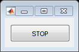
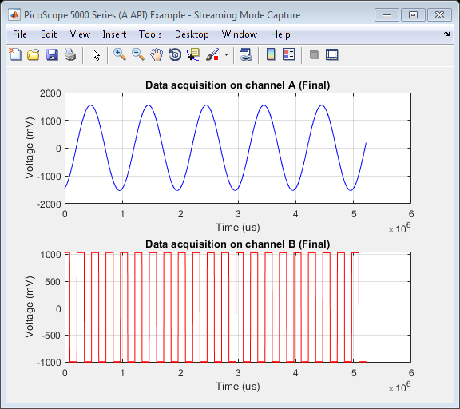

PicoScope 5000 Series (A API) Instrument Driver Oscilloscope Streaming Data Capture Example
This is an example of an instrument control session using a device object. The instrument control session comprises all the steps you are likely to take when communicating with your instrument.
These steps are:
- Create a device object
- Connect to the instrument
- Configure properties
- Invoke functions
- Disconnect from the instrument
To run the instrument control session, type the name of the file, PS5000A_ID_Streaming_Example, at the MATLAB command prompt.
The file, PS5000A_ID_STREAMING_EXAMPLE.M must be on your MATLAB PATH. For additional information on setting your MATLAB PATH, type 'help addpath' at the MATLAB command prompt.
Example: PS5000A_ID_Streaming_Example;
Description: Demonstrates how to set properties and call functions in order to capture data in streaming mode from a PicoScope 5000 Series Oscilloscope using the underlying 'A' API library functions.
Note: Not all device functions used in this example are compatible with the Test and Measurement Tool.
Copyright: © 2013-2018 Pico Technology Ltd. See LICENSE file for terms.
Contents
- Suggested input test signals
- Clear command window and close any figures
- Load configuration information
- Parameter definitions
- Device connection
- Display unit information
- Channel setup
- Change resolution
- Set simple trigger
- Set data buffers
- Start streaming and collect data
- Stop the device
- Find the number of samples
- Process data
- Disconnect device
Suggested input test signals
This example was published using the following test signals:
- Channel A: 3 Vpp, 1 Hz sine wave
- Channel B: 2 Vpp, 4 Hz square wave
Clear command window and close any figures
clc;
close all;
Load configuration information
PS5000aConfig;
Parameter definitions
Define any parameters that might be required throughout the script.
channelA = ps5000aEnuminfo.enPS5000AChannel.PS5000A_CHANNEL_A; channelB = ps5000aEnuminfo.enPS5000AChannel.PS5000A_CHANNEL_B;
Device connection
% Check if an Instrument session using the device object |ps5000aDeviceObj| % is still open, and if so, disconnect if the User chooses 'Yes' when prompted. if (exist('ps5000aDeviceObj', 'var') && ps5000aDeviceObj.isvalid && strcmp(ps5000aDeviceObj.status, 'open')) openDevice = questionDialog(['Device object ps5000aDeviceObj has an open connection. ' ... 'Do you wish to close the connection and continue?'], ... 'Device Object Connection Open'); if (openDevice == PicoConstants.TRUE) % Close connection to device. disconnect(ps5000aDeviceObj); delete(ps5000aDeviceObj); else % Exit script if User selects 'No'. return; end end % Create a device object. ps5000aDeviceObj = icdevice('picotech_ps5000a_generic', ''); % Connect device object to hardware. connect(ps5000aDeviceObj);
PicoScope 5000 Series (A API) MATLAB Instrument Driver
Copyright © 2013-2018 Pico Technology Ltd. All rights reserved.
Number of units found: 1
Serial number(s): FY984/0005
Opening PicoScope 5000 Series (A API) device...
Instrument Device Object Using Driver : picotech_ps5000a_generic.mdd
Instrument Information
Type: Oscilloscope
Manufacturer: Pico Technology Ltd.
Model: PicoScope 5000A, 5000B and 5000D Series
Driver Information
DriverType: MATLAB generic
DriverName: picotech_ps5000a_generic.mdd
DriverVersion: 2.2.14.39
Communication State
Status: open
Default Channel Setup:-
-----------------------
Channel A:-
Enabled: True
Coupling: DC
Range: 5 V
Analog offset: 0.0 V
Channel B:-
Enabled: True
Coupling: DC
Range: 5 V
Analog offset: 0.0 V
Channel C:-
Enabled: True
Coupling: DC
Range: 5 V
Analog offset: 0.0 V
Channel D:-
Enabled: True
Coupling: DC
Range: 5 V
Analog offset: 0.0 V
Turning off Equivalent Time Sampling...
Equivalent Time Sampling turned off.
Turning off trigger...
Trigger turned off.
Default Block mode parameters:-
Timebase index : 65
Time Interval: 504 ns
Number of pre-trigger samples: 0
Number of post-trigger samples: 10000
Total number of samples: 10000
Default Streaming mode parameters:-
Streaming interval: 1.00e-06 s
Streaming auto stop: 1
Default Signal generator parameters:-
Start frequency: 1000 Hz
Stop frequency: 1000 Hz
Connected to PicoScope 5000 Series (A API) device:-
Instrument Model: 5444D
Batch/Serial Number: FY984/0005
USB Version: 3.0
Analog Channels: 4
Resolution: 8 bits
Bandwidth: 200 MHz
Buffer Memory: 512 MS
Maximum Sampling Rate: 1 GS/s
Signal Generator Type: Arbitrary Waveform Generator
5 V Power Supply connected: True
Display unit information
[status.getUnitInfo, unitInfo] = invoke(ps5000aDeviceObj, 'getUnitInfo');
disp(unitInfo);
'Driver version: 2.1.0.687'
'USB version: 3.0'
'Hardware version: 1'
'Variant: 5444D'
'Batch & Serial: FY984/0005'
'Cal. Date: 18May18'
'Kernel version: 1.2'
'Digital HW version: 1'
'Analogue HW version: 1'
Channel setup
All channels are enabled by default - if the device is a 4-channel scope, switch off channels C and D so device can be set to 15-bit resolution.
% Channel A channelSettings(1).enabled = PicoConstants.TRUE; channelSettings(1).coupling = ps5000aEnuminfo.enPS5000ACoupling.PS5000A_DC; channelSettings(1).range = ps5000aEnuminfo.enPS5000ARange.PS5000A_2V; channelSettings(1).analogueOffset = 0.0; channelARangeMv = PicoConstants.SCOPE_INPUT_RANGES(channelSettings(1).range + 1); % Channel B channelSettings(2).enabled = PicoConstants.TRUE; channelSettings(2).coupling = ps5000aEnuminfo.enPS5000ACoupling.PS5000A_DC; channelSettings(2).range = ps5000aEnuminfo.enPS5000ARange.PS5000A_2V; channelSettings(2).analogueOffset = 0.0; % Variables that will be required later channelBRangeMv = PicoConstants.SCOPE_INPUT_RANGES(channelSettings(2).range + 1); if (ps5000aDeviceObj.channelCount == PicoConstants.QUAD_SCOPE) % Channel C channelSettings(3).enabled = PicoConstants.FALSE; channelSettings(3).coupling = ps5000aEnuminfo.enPS5000ACoupling.PS5000A_DC; channelSettings(3).range = ps5000aEnuminfo.enPS5000ARange.PS5000A_2V; channelSettings(3).analogueOffset = 0.0; % Channel D channelSettings(4).enabled = PicoConstants.FALSE; channelSettings(4).coupling = ps5000aEnuminfo.enPS5000ACoupling.PS5000A_DC; channelSettings(4).range = ps5000aEnuminfo.enPS5000ARange.PS5000A_2V; channelSettings(4).analogueOffset = 0.0; end % Keep the status values returned from the driver. numChannels = get(ps5000aDeviceObj, 'channelCount'); status.setChannelStatus = zeros(numChannels, 1); [status.currentPowerSource] = invoke(ps5000aDeviceObj, 'ps5000aCurrentPowerSource'); % Check if the power supply is connected - channels C and D will not be % enabled on a 4-channel oscilloscope if it is only USB powered. if (status.currentPowerSource == PicoStatus.PICO_POWER_SUPPLY_NOT_CONNECTED) numChannels = PicoConstants.DUAL_SCOPE; end for ch = 1:numChannels status.setChannelStatus(ch) = invoke(ps5000aDeviceObj, 'ps5000aSetChannel', ... (ch - 1), channelSettings(ch).enabled, ... channelSettings(ch).coupling, channelSettings(ch).range, ... channelSettings(ch).analogueOffset); end
Change resolution
The maximum resolution will depend on the number of channels enabled.
% Set resolution to 15 bits as 2 channels will be enabled. [status.setResolution, resolution] = invoke(ps5000aDeviceObj, 'ps5000aSetDeviceResolution', 15); % Obtain the maximum Analog Digital Converter (ADC) count value from the % driver - this is used for scaling values returned from the driver when % data is collected. This value may change depending on the resolution % selected. maxADCCount = get(ps5000aDeviceObj, 'maxADCValue');
ps5000aSetDeviceResolution: Device resolution set to 15 bits.
Set simple trigger
Set a trigger on channel A, with an auto timeout - the default value for delay is used. The device will wait for a rising edge through the specified threshold unless the timeout occurs first.
% Trigger properties and functions are located in the Instrument % Driver's Trigger group. triggerGroupObj = get(ps5000aDeviceObj, 'Trigger'); triggerGroupObj = triggerGroupObj(1); % Set the |autoTriggerMs| property in order to automatically trigger the % oscilloscope after 1 second if a trigger event has not occurred. Set to 0 % to wait indefinitely for a trigger event. set(triggerGroupObj, 'autoTriggerMs', 1000); % Channel : 0 (ps5000aEnuminfo.enPS5000AChannel.PS5000A_CHANNEL_A) % Threshold : 500 mV % Direction : 2 (ps5000aEnuminfo.enPS5000AThresholdDirection.PS5000A_RISING) [status.setSimpleTrigger] = invoke(triggerGroupObj, 'setSimpleTrigger', 0, 500, 2);
Set data buffers
Data buffers for channels A and B - buffers should be set with the driver, and these MUST be passed with application buffers to the wrapper driver. This will ensure that data is correctly copied from the driver buffers for later processing.
overviewBufferSize = 100000; % Size of the buffer to collect data from buffer. segmentIndex = 0; ratioMode = ps5000aEnuminfo.enPS5000ARatioMode.PS5000A_RATIO_MODE_NONE; % Buffers to be passed to the driver pDriverBufferChA = libpointer('int16Ptr', zeros(overviewBufferSize, 1, 'int16')); pDriverBufferChB = libpointer('int16Ptr', zeros(overviewBufferSize, 1, 'int16')); status.setDataBufferChA = invoke(ps5000aDeviceObj, 'ps5000aSetDataBuffer', ... channelA, pDriverBufferChA, overviewBufferSize, segmentIndex, ratioMode); status.setDataBufferChB = invoke(ps5000aDeviceObj, 'ps5000aSetDataBuffer', ... channelB, pDriverBufferChB, overviewBufferSize, segmentIndex, ratioMode); % Application Buffers - these are for copying from the driver into. pAppBufferChA = libpointer('int16Ptr', zeros(overviewBufferSize, 1, 'int16')); pAppBufferChB = libpointer('int16Ptr', zeros(overviewBufferSize, 1, 'int16')); % Streaming properties and functions are located in the Instrument Driver's % Streaming group. streamingGroupObj = get(ps5000aDeviceObj, 'Streaming'); streamingGroupObj = streamingGroupObj(1); status.setAppDriverBuffersA = invoke(streamingGroupObj, 'setAppAndDriverBuffers', channelA, ... pAppBufferChA, pDriverBufferChA, overviewBufferSize); status.setAppDriverBuffersB = invoke(streamingGroupObj, 'setAppAndDriverBuffers', channelB, ... pAppBufferChB, pDriverBufferChB, overviewBufferSize);
Start streaming and collect data
Use default value for streaming interval which is 1e-6 for 1 MS/s. Collect data for 5 seconds with auto stop - maximum array size will depend on the PC's resources - type memory at the MATLAB command prompt for further information.
To change the sample interval set the streamingInterval property of the Streaming group object. The call to the ps5000aRunStreaming() function will output the actual sampling interval used by the driver.
% To change the sample interval e.g 5 us for 200 kS/s % set(streamingGroupObj, 'streamingInterval', 5e-6);
Set the number of pre- and post-trigger samples. If no trigger is set the library will still store numPreTriggerSamples + numPostTriggerSamples.
set(ps5000aDeviceObj, 'numPreTriggerSamples', 0); set(ps5000aDeviceObj, 'numPostTriggerSamples', 5000000);
The autoStop parameter can be set to false (0) to allow for continuous data collection. set(streamingGroupObj, 'autoStop', PicoConstants.FALSE);
% Set other streaming parameters
downSampleRatio = 1;
downSampleRatioMode = ps5000aEnuminfo.enPS5000ARatioMode.PS5000A_RATIO_MODE_NONE;
Defined buffers to store data collected from the channels. If capturing data without using the autoStop flag, or if using a trigger with the autoStop flag, allocate sufficient space (1.5 times the sum of the number of pre-trigger and post-trigger samples is shown below) to allow for additional pre-trigger data. Pre-allocating the array is more efficient than using vertcat to combine data.
maxSamples = get(ps5000aDeviceObj, 'numPreTriggerSamples') + ... get(ps5000aDeviceObj, 'numPostTriggerSamples'); % Take into account the downsampling ratio mode - required if collecting % data without a trigger and using the autoStop flag. finalBufferLength = round(1.5 * maxSamples / downSampleRatio); pBufferChAFinal = libpointer('int16Ptr', zeros(finalBufferLength, 1, 'int16')); pBufferChBFinal = libpointer('int16Ptr', zeros(finalBufferLength, 1, 'int16')); % Prompt User to indicate if they wish to plot live streaming data. plotLiveData = questionDialog('Plot live streaming data?', 'Streaming Data Plot'); if (plotLiveData == PicoConstants.TRUE) disp('Live streaming data collection with second plot on completion.'); else disp('Streaming data plot on completion.'); end originalPowerSource = invoke(ps5000aDeviceObj, 'ps5000aCurrentPowerSource'); % Start streaming data collection. [status.runStreaming, sampleInterval, sampleIntervalTimeUnitsStr] = ... invoke(streamingGroupObj, 'ps5000aRunStreaming', downSampleRatio, ... downSampleRatioMode, overviewBufferSize); disp('Streaming data...'); fprintf('Click the STOP button to stop capture or wait for auto stop if enabled.\n') % Variables to be used when collecting the data: hasAutoStopOccurred = PicoConstants.FALSE; % Indicates if the device has stopped automatically. powerChange = PicoConstants.FALSE; % If the device power status has changed. newSamples = 0; % Number of new samples returned from the driver. previousTotal = 0; % The previous total number of samples. totalSamples = 0; % Total samples captured by the device. startIndex = 0; % Start index of data in the buffer returned. hasTriggered = 0; % To indicate if trigger has occurred. triggeredAtIndex = 0; % The index in the overall buffer where the trigger occurred. time = zeros(overviewBufferSize / downSampleRatio, 1); % Array to hold time values status.getStreamingLatestValuesStatus = PicoStatus.PICO_OK; % OK % Display a 'Stop' button. [stopFig.h, stopFig.h] = stopButton(); flag = 1; % Use flag variable to indicate if stop button has been clicked (0). setappdata(gcf, 'run', flag); % Plot Properties - these are for displaying data as it is collected. if (plotLiveData == PicoConstants.TRUE) % Plot on a single figure. figure1 = figure('Name','PicoScope 5000 Series (A API) Example - Streaming Mode Capture', ... 'NumberTitle','off'); axes1 = axes('Parent', figure1); % Estimate x-axis limit to try and avoid using too much CPU resources % when drawing - use max voltage range selected if plotting multiple % channels on the same graph. xlim(axes1, [0 (sampleInterval * finalBufferLength)]); yRange = max(channelARangeMv, channelBRangeMv); ylim(axes1,[(-1 * yRange) yRange]); hold(axes1,'on'); grid(axes1, 'on'); title(axes1, 'Live Streaming Data Capture'); if (strcmp(sampleIntervalTimeUnitsStr, 'us')) xLabelStr = 'Time (\mus)'; else xLabelStr = strcat('Time (', sampleIntervalTimeUnitsStr, ')'); xlabel(axes1, xLabelStr); end xlabel(axes1, xLabelStr); ylabel(axes1, 'Voltage (mV)'); end
Streaming data plot on completion. ps5000aRunStreaming:- Sample interval 1 us Streaming data... Click the STOP button to stop capture or wait for auto stop if enabled.
Collect samples as long as the hasAutoStopOccurred flag has not been set or the call to getStreamingLatestValues() does not return an error code (check for STOP button push inside loop).
while(hasAutoStopOccurred == PicoConstants.FALSE && status.getStreamingLatestValuesStatus == PicoStatus.PICO_OK) ready = PicoConstants.FALSE; while (ready == PicoConstants.FALSE) status.getStreamingLatestValuesStatus = invoke(streamingGroupObj, 'getStreamingLatestValues'); ready = invoke(streamingGroupObj, 'isReady'); % Give option to abort from here flag = getappdata(gcf, 'run'); drawnow; if (flag == 0) disp('STOP button clicked - aborting data collection.') break; end drawnow; end % Check for data [newSamples, startIndex] = invoke(streamingGroupObj, 'availableData'); if (newSamples > 0) % Check if the scope has triggered. [triggered, triggeredAt] = invoke(streamingGroupObj, 'isTriggerReady'); if (triggered == PicoConstants.TRUE) % Adjust trigger position as MATLAB does not use zero-based % indexing. bufferTriggerPosition = triggeredAt + 1; fprintf('Triggered - index in buffer: %d\n', bufferTriggerPosition); hasTriggered = triggered; % Set the total number of samples at which the device % triggered. triggeredAtIndex = totalSamples + bufferTriggerPosition; end previousTotal = totalSamples; totalSamples = totalSamples + newSamples; % Printing to console can slow down acquisition - use for % demonstration. fprintf('Collected %d samples, startIndex: %d total: %d.\n', newSamples, startIndex, totalSamples); % Position indices of data in the buffer(s). firstValuePosn = startIndex + 1; lastValuePosn = startIndex + newSamples; % Convert data values to millivolts from the application buffer(s). bufferChAmV = adc2mv(pAppBufferChA.Value(firstValuePosn:lastValuePosn), channelARangeMv, maxADCCount); bufferChBmV = adc2mv(pAppBufferChB.Value(firstValuePosn:lastValuePosn), channelBRangeMv, maxADCCount); % Process collected data further if required - this example plots % the data if the User has selected 'Yes' at the prompt. % Copy data into the final buffer(s). pBufferChAFinal.Value(previousTotal + 1:totalSamples) = bufferChAmV; pBufferChBFinal.Value(previousTotal + 1:totalSamples) = bufferChBmV; if (plotLiveData == PicoConstants.TRUE) % Time axis. % Multiply by ratio mode as samples get reduced time = (double(sampleInterval) * double(downSampleRatio)) * (previousTotal:(totalSamples - 1)); plot(time, bufferChAmV, time, bufferChBmV); end % Clear variables for use again clear bufferChAmV; clear bufferChBmV; clear firstValuePosn; clear lastValuePosn; clear startIndex; clear triggered; clear triggerAt; end % Check if auto stop has occurred. hasAutoStopOccurred = invoke(streamingGroupObj, 'autoStopped'); if (hasAutoStopOccurred == PicoConstants.TRUE) disp('AutoStop: TRUE - exiting data collection loop.'); break; end % Check if 'STOP' button has been clicked. flag = getappdata(gcf, 'run'); drawnow; if (flag == 0) disp('STOP button clicked - aborting data collection.') break; end end % Close the STOP button window. if (exist('stopFig', 'var')) close('Stop Button'); clear stopFig; end if (plotLiveData == PicoConstants.TRUE) drawnow; % Take hold off the current figure. hold(axes1, 'off'); movegui(figure1, 'west'); end if (hasTriggered == PicoConstants.TRUE) fprintf('Triggered at overall index: %d\n\n', triggeredAtIndex); end fprintf('\n');
Collected 68268 samples, startIndex: 0 total: 68268. Collected 31732 samples, startIndex: 68268 total: 100000. Collected 37034 samples, startIndex: 0 total: 137034. Collected 62966 samples, startIndex: 37034 total: 200000. Triggered - index in buffer: 18063 Collected 73068 samples, startIndex: 0 total: 273068. Collected 26932 samples, startIndex: 73068 total: 300000. Collected 41334 samples, startIndex: 0 total: 341334. Collected 58666 samples, startIndex: 41334 total: 400000. Collected 77868 samples, startIndex: 0 total: 477868. Collected 22132 samples, startIndex: 77868 total: 500000. Collected 46134 samples, startIndex: 0 total: 546134. Collected 53866 samples, startIndex: 46134 total: 600000. Collected 82668 samples, startIndex: 0 total: 682668. Collected 17332 samples, startIndex: 82668 total: 700000. Collected 50934 samples, startIndex: 0 total: 750934. Collected 49066 samples, startIndex: 50934 total: 800000. Collected 19200 samples, startIndex: 0 total: 819200. Collected 68268 samples, startIndex: 19200 total: 887468. Collected 12532 samples, startIndex: 87468 total: 900000. Collected 55734 samples, startIndex: 0 total: 955734. Collected 44266 samples, startIndex: 55734 total: 1000000. Collected 24000 samples, startIndex: 0 total: 1024000. Collected 68268 samples, startIndex: 24000 total: 1092268. Collected 7732 samples, startIndex: 92268 total: 1100000. Collected 60534 samples, startIndex: 0 total: 1160534. Collected 39466 samples, startIndex: 60534 total: 1200000. Collected 28800 samples, startIndex: 0 total: 1228800. Collected 68268 samples, startIndex: 28800 total: 1297068. Collected 2932 samples, startIndex: 97068 total: 1300000. Collected 65334 samples, startIndex: 0 total: 1365334. Collected 34666 samples, startIndex: 65334 total: 1400000. Collected 33600 samples, startIndex: 0 total: 1433600. Collected 66400 samples, startIndex: 33600 total: 1500000. Collected 70134 samples, startIndex: 0 total: 1570134. Collected 29866 samples, startIndex: 70134 total: 1600000. Collected 38400 samples, startIndex: 0 total: 1638400. Collected 61600 samples, startIndex: 38400 total: 1700000. Collected 6668 samples, startIndex: 0 total: 1706668. Collected 68766 samples, startIndex: 6668 total: 1775434. Collected 24566 samples, startIndex: 75434 total: 1800000. Collected 43200 samples, startIndex: 0 total: 1843200. Collected 56800 samples, startIndex: 43200 total: 1900000. Collected 11468 samples, startIndex: 0 total: 1911468. Collected 68766 samples, startIndex: 11468 total: 1980234. Collected 19766 samples, startIndex: 80234 total: 2000000. Collected 48000 samples, startIndex: 0 total: 2048000. Collected 52000 samples, startIndex: 48000 total: 2100000. Collected 16268 samples, startIndex: 0 total: 2116268. Collected 68766 samples, startIndex: 16268 total: 2185034. Collected 14966 samples, startIndex: 85034 total: 2200000. Collected 52800 samples, startIndex: 0 total: 2252800. Collected 47200 samples, startIndex: 52800 total: 2300000. Collected 21068 samples, startIndex: 0 total: 2321068. Collected 68266 samples, startIndex: 21068 total: 2389334. Collected 10666 samples, startIndex: 89334 total: 2400000. Collected 57600 samples, startIndex: 0 total: 2457600. Collected 42400 samples, startIndex: 57600 total: 2500000. Collected 94134 samples, startIndex: 0 total: 2594134. Collected 5866 samples, startIndex: 94134 total: 2600000. Collected 62400 samples, startIndex: 0 total: 2662400. Collected 37600 samples, startIndex: 62400 total: 2700000. Collected 30668 samples, startIndex: 0 total: 2730668. Collected 68266 samples, startIndex: 30668 total: 2798934. Collected 1066 samples, startIndex: 98934 total: 2800000. Collected 67200 samples, startIndex: 0 total: 2867200. Collected 32800 samples, startIndex: 67200 total: 2900000. Collected 35468 samples, startIndex: 0 total: 2935468. Collected 64532 samples, startIndex: 35468 total: 3000000. Collected 72000 samples, startIndex: 0 total: 3072000. Collected 28000 samples, startIndex: 72000 total: 3100000. Collected 40268 samples, startIndex: 0 total: 3140268. Collected 59732 samples, startIndex: 40268 total: 3200000. Collected 8534 samples, startIndex: 0 total: 3208534. Collected 68266 samples, startIndex: 8534 total: 3276800. Collected 23200 samples, startIndex: 76800 total: 3300000. Collected 45068 samples, startIndex: 0 total: 3345068. Collected 54932 samples, startIndex: 45068 total: 3400000. Collected 13334 samples, startIndex: 0 total: 3413334. Collected 68266 samples, startIndex: 13334 total: 3481600. Collected 18400 samples, startIndex: 81600 total: 3500000. Collected 49868 samples, startIndex: 0 total: 3549868. Collected 50132 samples, startIndex: 49868 total: 3600000. Collected 86400 samples, startIndex: 0 total: 3686400. Collected 13600 samples, startIndex: 86400 total: 3700000. Collected 54668 samples, startIndex: 0 total: 3754668. Collected 45332 samples, startIndex: 54668 total: 3800000. Collected 22934 samples, startIndex: 0 total: 3822934. Collected 68266 samples, startIndex: 22934 total: 3891200. Collected 8800 samples, startIndex: 91200 total: 3900000. Collected 59468 samples, startIndex: 0 total: 3959468. Collected 40532 samples, startIndex: 59468 total: 4000000. Collected 27734 samples, startIndex: 0 total: 4027734. Collected 68266 samples, startIndex: 27734 total: 4096000. Collected 4000 samples, startIndex: 96000 total: 4100000. Collected 64268 samples, startIndex: 0 total: 4164268. Collected 35732 samples, startIndex: 64268 total: 4200000. Collected 32534 samples, startIndex: 0 total: 4232534. Collected 67466 samples, startIndex: 32534 total: 4300000. Collected 69068 samples, startIndex: 0 total: 4369068. Collected 30932 samples, startIndex: 69068 total: 4400000. Collected 37334 samples, startIndex: 0 total: 4437334. Collected 62666 samples, startIndex: 37334 total: 4500000. Collected 5600 samples, startIndex: 0 total: 4505600. Collected 68268 samples, startIndex: 5600 total: 4573868. Collected 26132 samples, startIndex: 73868 total: 4600000. Collected 42134 samples, startIndex: 0 total: 4642134. Collected 57866 samples, startIndex: 42134 total: 4700000. Collected 78668 samples, startIndex: 0 total: 4778668. Collected 21332 samples, startIndex: 78668 total: 4800000. Collected 46934 samples, startIndex: 0 total: 4846934. Collected 53066 samples, startIndex: 46934 total: 4900000. Collected 15200 samples, startIndex: 0 total: 4915200. Collected 68268 samples, startIndex: 15200 total: 4983468. Collected 16532 samples, startIndex: 83468 total: 5000000. Collected 51734 samples, startIndex: 0 total: 5051734. Collected 48266 samples, startIndex: 51734 total: 5100000. Collected 20000 samples, startIndex: 0 total: 5120000. Collected 68268 samples, startIndex: 20000 total: 5188268. Collected 11732 samples, startIndex: 88268 total: 5200000. Collected 18062 samples, startIndex: 0 total: 5218062. AutoStop: TRUE - exiting data collection loop. Triggered at overall index: 218063
Stop the device
This function should be called regardless of whether the autoStop property is enabled or not.
[status.stop] = invoke(ps5000aDeviceObj, 'ps5000aStop');
Find the number of samples
This is the number of samples held in the shared library itself. The actual number of samples collected when using a trigger is likely to be greater.
[status.noOfStreamingValues, numStreamingValues] = invoke(streamingGroupObj, 'ps5000aNoOfStreamingValues'); fprintf('Number of samples available after data collection: %u\n', numStreamingValues);
Number of samples available after data collection: 5000000
Process data
Process data post-capture if required - here the data will be plotted.
% Reduce size of arrays if required. if (totalSamples < finalBufferLength) pBufferChAFinal.Value(totalSamples + 1:end) = []; pBufferChBFinal.Value(totalSamples + 1:end) = []; end % Retrieve data for the channels. channelAFinal = pBufferChAFinal.Value(); channelBFinal = pBufferChBFinal.Value(); % Plot total data collected on another figure. finalFigure = figure('Name','PicoScope 5000 Series (A API) Example - Streaming Mode Capture', ... 'NumberTitle','off'); finalFigureAxes = axes('Parent', finalFigure); hold(finalFigureAxes, 'on'); grid(finalFigureAxes, 'on'); if (strcmp(sampleIntervalTimeUnitsStr, 'us')) xlabel(finalFigureAxes, 'Time (\mus)'); else xLabelStr = strcat('Time (', sampleIntervalTimeUnitsStr, ')'); xlabel(finalFigureAxes, xLabelStr); end ylabel(finalFigureAxes, 'Voltage (mV)'); hold(finalFigureAxes, 'off'); time = (double(sampleInterval) * double(downSampleRatio)) * (0:length(channelAFinal) - 1); % Channel A chAAxes = subplot(2,1,1); plot(chAAxes, time, channelAFinal, 'b'); xLabelStr = strcat('Time (', sampleIntervalTimeUnitsStr, ')'); xlabel(chAAxes, xLabelStr); ylabel(chAAxes, 'Voltage (mV)'); title(chAAxes, 'Data acquisition on channel A (Final)'); grid(chAAxes, 'on'); % Channel B chBAxes = subplot(2,1,2); plot(chBAxes, time, channelBFinal, 'r'); title(chBAxes, 'Data acquisition on channel B (Final)'); xLabelStr = strcat('Time (', sampleIntervalTimeUnitsStr, ')'); xlabel(chBAxes, xLabelStr); ylabel(chBAxes, 'Voltage (mV)'); grid(chBAxes, 'on'); movegui(finalFigure, 'east');
Disconnect device
Disconnect device object from hardware.
disconnect(ps5000aDeviceObj); delete(ps5000aDeviceObj);
Connection to PicoScope 5444D with serial number FY984/0005 closed successfully. Libraries unloaded successfully.